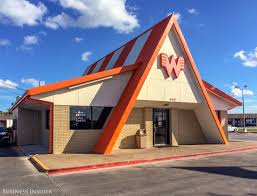
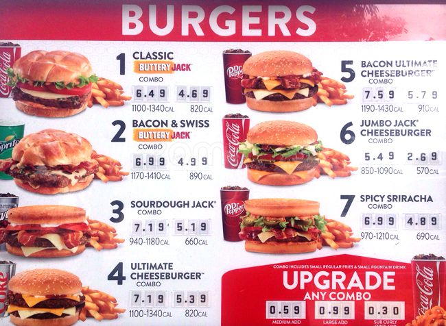
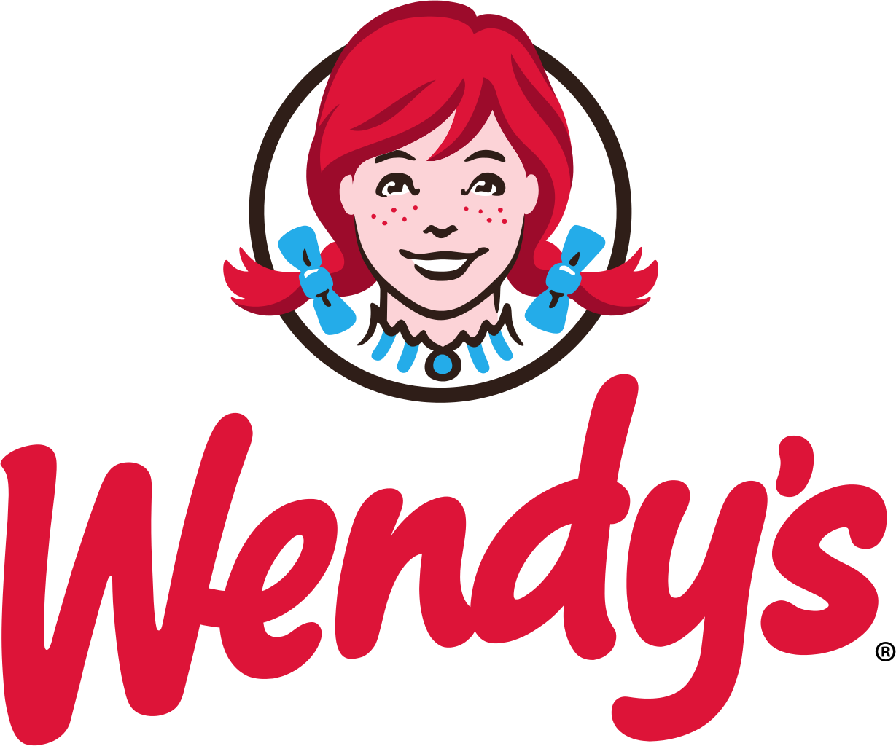
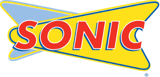
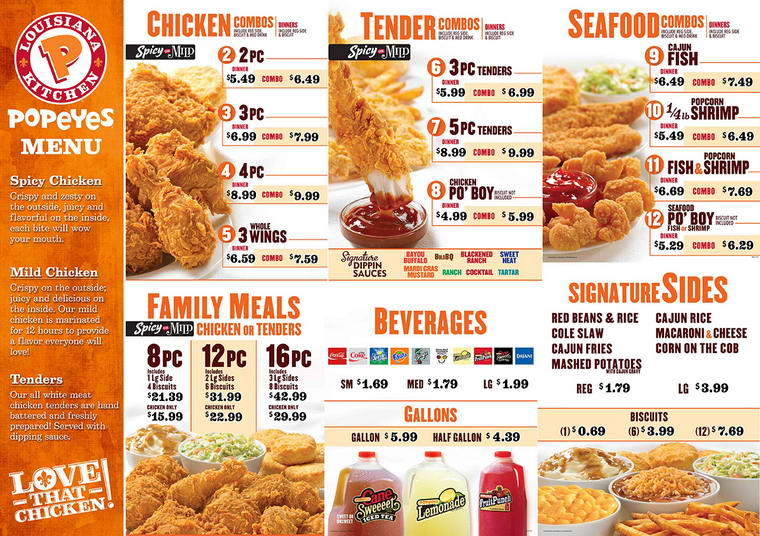

My favorite fast food chains!
1) Whataburger!
| Whataburger is an American privately held regional fast food restaurant chain, based in San Antonio, Texas,
that specializes in hamburgers. The company, founded by Harmon Dobson and Paul Burton, opened its first restaurant in Corpus Christi, Texas,
in 1950. The chain is owned and operated by the Dobson family, along with 25 franchisers.[3]
As of April 2017, there are currently 809 Whataburger stores across the Southeastern and Southwestern United States regions.[2]
Whataburger was known for many years for its distinct A-framed orange-and-white-stripe-roofed buildings.
The first A-frame restaurant was built in Odessa, Texas, and is now a historical landmark.[4]
The company's core products includes the "Whataburger", the "Whataburger Jr.", the "Justaburger", the "Whatacatch" (fish sandwich),
and the "Whatachick'n". The company also has a breakfast menu. -Wikipedia |
 |
2) Jack In The Box!
| Jack in the Box is an American fast-food restaurant chain founded February 21, 1951, by Robert O. Peterson in
San Diego, California, where it is headquartered. The chain has 2,200 locations, primarily serving the West Coast of the United States and
selected large urban areas in the eastern portion of the US including Texas. Food items include a variety of hamburger and cheeseburger
sandwiches along with selections of internationally themed foods such as tacos and egg rolls.
The company also operates the Qdoba Mexican Grill chain.[4][5] -Wikipedia |
 |
3) Wendy's!
| Wendy's is an American international fast food restaurant chain founded by Dave Thomas on November 15, 1969, in Columbus, Ohio.
The company moved its headquarters to Dublin, Ohio, on January 29, 2006. As of 2016, Wendy's was the world's third largest hamburger fast food
chain with 6,500+ locations, following Burger King and McDonald's. On April 24, 2008, the company announced a merger with Triarc Companies Inc.
, a publicly traded company and the parent company of Arby's. Despite the new ownership, Wendy's headquarters remained in Dublin. Previously,
Wendy's had rejected more than two buyout offers from Triarc. Following the merger, Triarc became known as Wendy's/Arby's Group, and later as
The Wendy's Company. As of January 2, 2017, there were a total of 6,537 locations, including 330 that are company-owned. 6,207 restaurants
are franchised, and 77% of them are located in North America. While Wendy's sets standards for exterior store appearance, food quality, and
menu, individual owners have control over hours of operations, interior decor, pricing and staff uniforms and wages.
Wendy's menu consists primarily of hamburgers, chicken sandwiches, French fries and beverages, including the signature Frosty, which is a
soft-serve frozen dairy dessert. Since phasing out their famous "Big Classic", the company does not have a signature sandwich, such as the
Burger King Whopper or the McDonald's Big Mac - although, by default, the "signature sandwich" spot seems to have been filled by Dave's
1/4 lb. Single (introduced in 2011 as Dave's Hot 'N Juicy as a reworking of the longstanding Wendy's Single, shortened to simply Dave's in
2016), a square-pattied burger made with fresh ground beef rather than round frozen patties. Wendy's uses square hamburger
patties – which hang over the edge of a circular bun – as its signature item. -Wikipedia |
 |
4) Sonic!
| Sonic Drive-In, more commonly known as Sonic, is an American drive-in fast-food restaurant chain based in Oklahoma City, Oklahoma.
As of September 5 2017, 3,557 restaurants were in 45 U.S. states. In 2011, it was ranked 10th in QSR Magazine's rankings of the top 50
quick-service and fast-casual restaurant brands in the nation (moving to 13th for 2015 and 2016).[2] Known for its use of carhops on roller
skates, the company annually hosts a competition to determine the top skating carhop in its system.
Sonic's menu consists of hamburgers and French fries, as well as onion rings, corn dogs, chili dogs and breakfast toaster sandwiches. Drink
options include soft drinks, slushes, and milkshakes. Customers can combine various drinks and flavors to create thousands of possible drink
combinations.[5][6] Ice cream desserts include sundaes and banana splits.
At a standard Sonic Drive-In, a customer drives into a covered drive-in stall, orders through an intercom speaker system, and has the food
delivered by a carhop. Most drive-ins also have patio seating, and many have drive-thru lanes. -Wikipedia |
 |
5) Popeyes!
| Popeyes is an American multinational chain of fried chicken fast food restaurants founded in 1972 in New Orleans, Louisiana.
Since 2008, its full brand name is Popeyes Louisiana Kitchen[2] and it was formerly named Popeyes Chicken & Biscuits[3] and Popeyes Famous
Fried Chicken & Biscuits.[4] It is currently a subsidiary of Restaurant Brands International.
According to a company press release dated June 29, 2007, Popeyes is the second-largest "quick-service chicken restaurant group, measured by
number of units", after KFC.[5] More than 2,600 Popeyes restaurants are in more than 40 states and the District of Columbia, Puerto Rico,
and 30 countries worldwide.[6] About thirty locations are company-owned, the rest franchised.[7] -Wikipedia |
 |